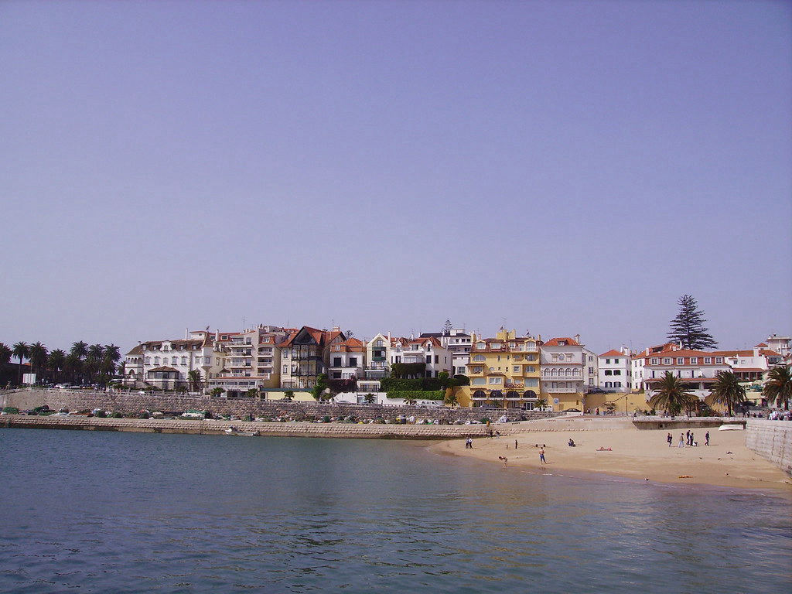

Qué está pasando realmente
En cualquier restaurante portugués tradicional, desde una pequeña tasca de barrio hasta un local elegante en el centro de Lisboa, es prácticamente seguro encontrar en la carta al menos una preparación de bacalhau, el bacalao salado y curado que se convirtió, con el tiempo, en el ingrediente más emblemático de toda la gastronomía nacional portuguesa. Existe incluso un dicho popular muy repetido dentro y fuera del país: hay tantas recetas de bacalao como días tiene el año, trescientas sesenta y cinco formas distintas de preparar el mismo pescado, sin repetirse jamás.
Lo curioso y casi paradójico de esta obsesión culinaria es que el bacalao ni siquiera es un pez propio de las aguas portuguesas: se pesca principalmente en el Atlántico Norte, en zonas frías cercanas a Noruega, Islandia y Terranova, muy lejos de la costa atlántica templada de Portugal. La relación entre Portugal y el bacalao nació, precisamente, de la larga tradición marítima y exploradora del país durante la era de los descubrimientos, cuando los pescadores portugueses comenzaron a viajar hasta aguas nórdicas para faenar este pescado, salándolo y secándolo a bordo para poder conservarlo durante los largos meses de travesía de regreso a casa.
Esta técnica de conservación —salar y secar el pescado hasta eliminar casi toda su humedad— resultó revolucionaria para una nación profundamente católica, donde la Iglesia exigía abstenerse de comer carne roja durante la Cuaresma y numerosos días del calendario litúrgico a lo largo del año. El bacalao salado, que podía conservarse durante meses sin refrigeración —una tecnología que obviamente no existía entonces— se convirtió en la solución perfecta: una fuente de proteína accesible, duradera y perfectamente compatible con las restricciones religiosas, disponible incluso en regiones interiores del país completamente alejadas del mar.
Existe un dicho popular portugués muy repetido: hay tantas recetas de bacalao como días tiene el año.
De dónde viene todo esto
Con el paso de los siglos, lo que empezó como una necesidad práctica y religiosa se transformó en una tradición culinaria propia, profundamente arraigada en la identidad nacional portuguesa. El bacalao pasó de ser un alimento de subsistencia asociado a la escasez, a convertirse en un ingrediente central de celebraciones familiares importantes, especialmente la cena de Nochebuena, donde el tradicional bacalhau cozido com todos —bacalao cocido con patatas, col y huevo, bañado en aceite de oliva— es, para muchísimas familias portuguesas, un plato tan sagrado como cualquier otro símbolo navideño.
Entre las recetas más célebres y queridas destacan el bacalhau à Brás, desmenuzado y mezclado con patatas paja finas, huevo revuelto y aceitunas negras; el bacalhau com natas, gratinado al horno con una cremosa salsa de nata; las pataniscas de bacalau, unos buñuelos crujientes fritos servidos como aperitivo o plato principal acompañado de arroz de tomate; y el bacalhau à Gomes de Sá, con capas de patata, cebolla caramelizada, huevo duro y aceitunas, originario de la ciudad de Oporto. Cada región, cada familia e incluso cada restaurante suele reclamar tener "la verdadera" versión de alguna de estas recetas, generando debates culinarios apasionados entre portugueses.
Más allá de lo básico
Preparar el bacalao correctamente requiere, además, un proceso de desalado cuidadoso que puede tomar entre veinticuatro y cuarenta y ocho horas, cambiando el agua varias veces para eliminar el exceso de sal sin perder la textura característica del pescado curado. Esta necesidad de planificación previa refuerza aún más su estatus como plato de ocasión especial, preparado con tiempo y dedicación, en lugar de una comida improvisada de entre semana, algo que contribuye también a la carga emocional y festiva que rodea a cada preparación.
Uno de los platos de bacalao más queridos, el bacalhau à Brás —bacalao desmenuzado mezclado con patata paja frita, huevo revuelto y aceitunas negras—, se dice que fue inventado en el barrio de Bairro Alto, en Lisboa, por un tabernero conocido solo como "Brás", en algún momento del siglo XIX. El plato se ha vuelto tan omnipresente que la mayoría de los hogares portugueses tiene su propia variante familiar, y las disputas sobre cuál es la versión "correcta" siguen siendo un tema de debate genuinamente popular en la mesa.
La ironía moderna de la obsesión portuguesa con el bacalao es más profunda de lo que la mayoría de los comensales imagina: la sobrepesca colapsó tan severamente las poblaciones de bacalao del Atlántico a lo largo del siglo XX que Portugal hoy importa prácticamente todo el bacalao que consume, casi por completo desde Noruega e Islandia. El plato nacional que define a un país, en otras palabras, depende por completo de un pescado capturado a miles de kilómetros en aguas ajenas: una cadena de suministro que se ha mantenido estable durante siglos pese a guerras, dictaduras y el colapso de la propia flota pesquera histórica de Portugal.

Qué debes saber si viajas
Algunos consejos para explorar la cultura del bacalao en Portugal:
- Prueba al menos tres preparaciones distintas de bacalao durante tu visita: los locales realmente se enorgullecen de la variedad.
- El bacalao es tradicionalmente un plato de Nochebuena: si visitas en diciembre, pregunta por las recetas familiares.
- Aunque en las tiendas se vea intimidante seco y salado, queda completamente hidratado y de sabor suave una vez cocinado correctamente.
- Combínalo con un vinho verde local para la combinación clásica que prefieren los comensales portugueses.
- Si un plato te resulta desconocido, simplemente pregunta: los camareros portugueses suelen estar orgullosos de explicar las decenas de formas de preparar el bacalao.
- Los restaurantes a veces sirven un pequeño aperitivo no solicitado (couvert) antes de la comida: puedes rechazarlo sin ofender si prefieres no pagarlo.
El panorama completo
Hoy en día, buena parte del bacalao que se consume en Portugal sigue importándose desde Noruega e Islandia, en un ciclo comercial que se mantiene prácticamente sin cambios desde hace siglos, a pesar de los avances tecnológicos en pesca y conservación de alimentos. Que un país entero haya construido una identidad gastronómica tan profunda alrededor de un pescado que ni siquiera nada en sus propias aguas es, en el fondo, un testimonio fascinante de cómo la historia, la religión y la necesidad práctica pueden convertir hasta el ingrediente más inesperado en el corazón mismo de la cultura de un pueblo.
¿Tienes curiosidad por saber cómo culturas cercanas manejan reglas parecidas? No te pierdas nuestros artículos sobre El crimen de pedir un capuchino después de mediodía en Italia y Romper platos: la fiesta griega que empieza con un pequeño desastre.